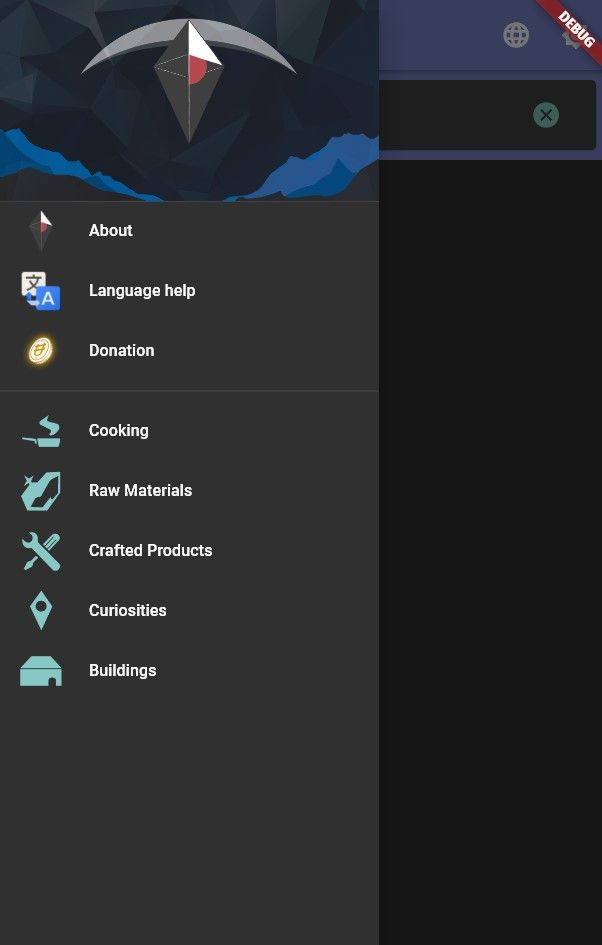
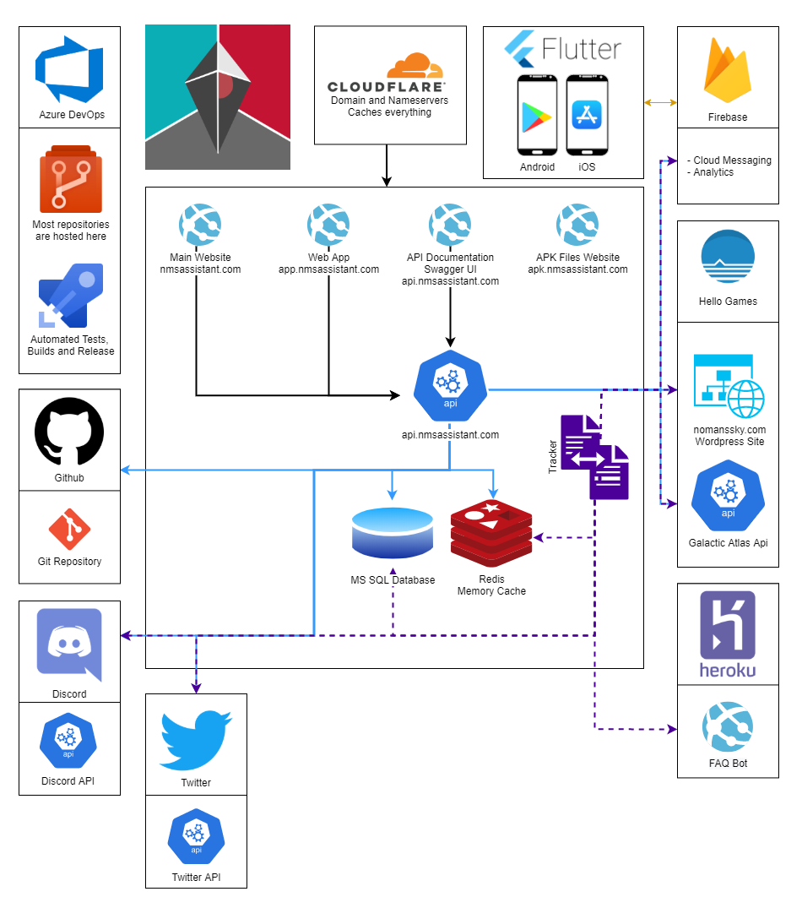
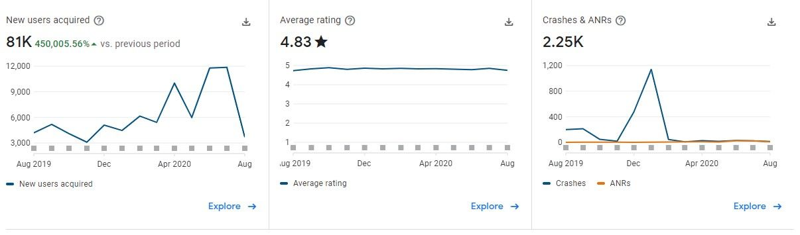
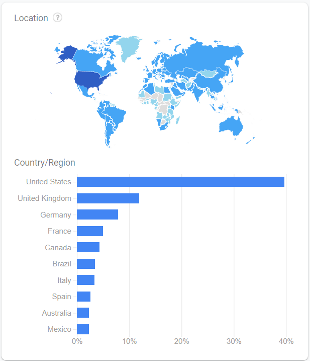
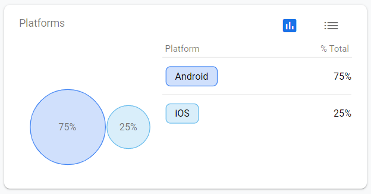
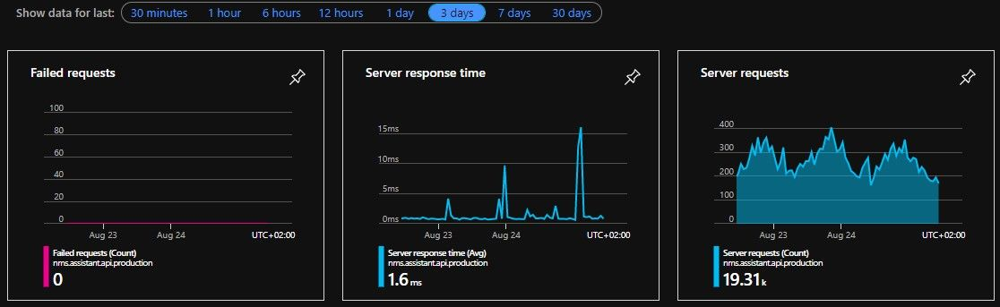

My life has changed quite a lot since the release of the Assistant for No Man's Sky app! I have learned so much and had the honour of talking with some of the most passionate No Man's Sky players worldwide!
A special thank you to everyone who has supported either myself or the apps! Including Procedural Traveller, Professor Cynical and especially to Captain Steve who was the first person to talk about the app on stream and in their YouTube videos! Here is the video it still gets my heart racing😅. Captain Steve has continuously helped improve the apps by not only giving shout outs to the app but has frequently given feedback and ideas for features! I also have to thank the No Man's Sky modding community who made it possible for anyone to data mine the game using tools created by the community like the MBINCompiler maintained by monkeyman192 who was kind enough to answer a lot of my annoying questions!
As I have mentioned in previous posts, the app was released on Android by accident on the 12th of August 2019 😂. The app quickly started getting users mostly because a big free update was released for No Man's Sky (the Beyond update) very close to the release of my app.

Since then I have released 50 Minor updates and several patch updates, most of the time creating a new update every week. The app has changed so much since then. When it first released, some of the features added include: Cart, Guides, Portal Library, Inventory Management, Community Mission Tracker, Timers, Friend Codes, Community Links, What is New and so on. All of these features and more are available on Android and iOS 🎉.
There are still many more features that I want to add to the apps, in fact the public roadmap (here) needs a bit of organising as there are a huge number of tickets and to many are priority. If everything is a priority then nothing is.
The Assistant for No Man's Sky is also no longer just a mobile app. There are a number of systems that all come together to create the current experience. The image below (slightly outdated at the time of writing) shows a simplified overview of the architecture of the Assistant for No Man's Sky apps and services:

As you can see, the apps are a very small part of the architecture, only taking up a small amount of space in this diagram.
Statistics
All of the stats will be Android only, as I don't like the Apple App Store's analytics page, mostly because I find that the metrics that it tracks are not important to me.
Over the last year, the number of users that have tried using the app has fluctuated. Usually for reasons that I cannot figure out 😅.

As you can see from the Crashes & ANRs chart, there was a massive spike in the number of crashes over the holiday period in 2019. This was due to an issue that affected Huawei devices and was due to an issue in one of the dependencies of the framework I am using (Flutter) to build the apps. You can read more about the issue here: https://github.com/flutter/flutter/issues/47804. That was a terrible period, I was pretty much helpless to the crashes. I was lucky that very few users reported the issue unlike other people and organisations who were affected by the issue.

In terms of demographics, the United States far out performs any other country in the world in terms of new users and active users.

Most of the app users are on Android. I do prioritise the Android version over the iOS version as anytime I want to release an iOS version I either struggle to get approval from the App Store (because the have suddenly found a feature that doesn't conform to their policies, even though the feature has been in the iOS app for weeks if not months) or they take incredibly long to review the update.

And lastly some statistics from the back end services. In the chart above, what I am most proud of is the number of failed requests being 0 for the last 3 days and the very low response time. Users will generally not experience an average response time of 1.6 ms. When the app makes a request to the back end services as there are many processes that take time. For example someone in the US will have longer loading times as the services are hosted in Europe. There is also added delays from serialising and deserializing the data being sent on both ends (mobile apps and on the servers). So this server response time chart may be a bit misleading, but it is a nice way to figure out which server side functions takes the longest to run so I can optimise those first.
Earnings
The Assistant for No Man's Sky app has been my most successful app, by far. It has reached thousands of people from so many different countries! I am so lucky that this community is so kind and supportive they have helped me to translate the apps into different languages, given a lot of helpful feedback, shared how much they appreciate the app with others and of course helped me with the costs of the app via donating.
One fact that heavily impacts the amount of earnings this app generates is that the app only displays ads on one page (and only if the users chooses to watch the add). I do not like ads and so I kept the amount of ads in my apps extremely low. The only place where you can view an advertisement is after clicking the watch add button on the donations page. In total for the whole year, I have earned just more than R700 (+- 40 USD) in ad revenue 😂. I can't even withdraw the money as the minimum amount required before you can withdraw the money from Google Admob is R1000. So obviously I did not make this app for the ad revenue it would generate 😂.
The biggest contributor to earnings is donations. I have been lucky to receive donations from the users of the apps. They are all so generous, especially those that have supported me on Patreon. I have not been very good at selling my Patreon as Patrons did not receive any bonus content until recently. I have been working on making weekly dev update posts (exclusive to Patrons) and have big plans on making it worthwhile to join my Patreon. Over the year that the app has been available I have received 100 separate donations, totaling to around 500 USD (I don't know the exact amount thanks to fees from different platforms, exchange rates and I spent some of it on improving our Discord server).
Summary
While the Assistant for No Man's Sky was not a success in terms of making me more wealthy. I have learnt an incredible amount! Through this app I have been put into situations I would not have had to deal with otherwise, such as disaster recovery, customer support and advertising to name a few. There are many features that I still plan on adding to the Assistant for No Man's Sky apps, so keep an eye out 😁